PDGui¶
PDGui provides a graphical front end to PDielec. It reads a material’s structure and response from a QM/MM calculation or a user-supplied input file, and calculates infrared, ATR or Raman spectra. The interface is a notebook with Main, Settings, Scenario, Plotting, Analysis, 3D Viewer and Fitter tabs. Additional scenarios appear as additional tabs.
Starting PDGui¶
PDGui can be run without arguments, or with an output file. It makes a best guess at the program from the filename and associated files. For example:
pdgui
pdgui OUTCAR
pdgui raman.castep -spectroscopy crystal_raman
pdgui raman.castep -spectroscopy powder_raman
pdgui experiment material.exp
pdgui finite_field zno-raman.json -spectroscopy crystal_raman
pdgui qe run1.dynG
Use qe as the program name when explicitly selecting that reader.
A program name can also be supplied with -program. For a saved session use
pdgui -script script.py. To calculate and write a spreadsheet without
remaining in the GUI, use:
pdgui -script script.py -spreadsheet results.xlsx -nosplash -exit
Option |
Description |
|---|---|
|
Initial spectroscopy: |
|
Explicit input program, for example |
|
Read a Python settings script. |
|
Write results to an Excel file with an |
|
Number of workers; zero selects the available physical cores. |
|
Use threads instead of the default worker processes. |
|
Suppress the splash window. |
|
Exit after the script and requested spreadsheet output. |
|
Enable diagnostic logging. |
The figures below use the CASTEP wurtzite ZnO calculation in
Examples/Crystal_Raman/Castep. Its output includes Raman tensors and a
non-zero nonlinear optical susceptibility, allowing the electro-optic (EO)
correction to be demonstrated. The Raman examples use 532 nm excitation,
298 K and a Lorentzian half-width of 5 cm-1. These are example settings;
individual control defaults are described below. The Fitter uses the existing
sodium-sulphate ATR example with an experimental spectrum.
Main Tab¶
The Main Tab selects the calculation to analyse and the files used for saving results and settings.
{kind=link}
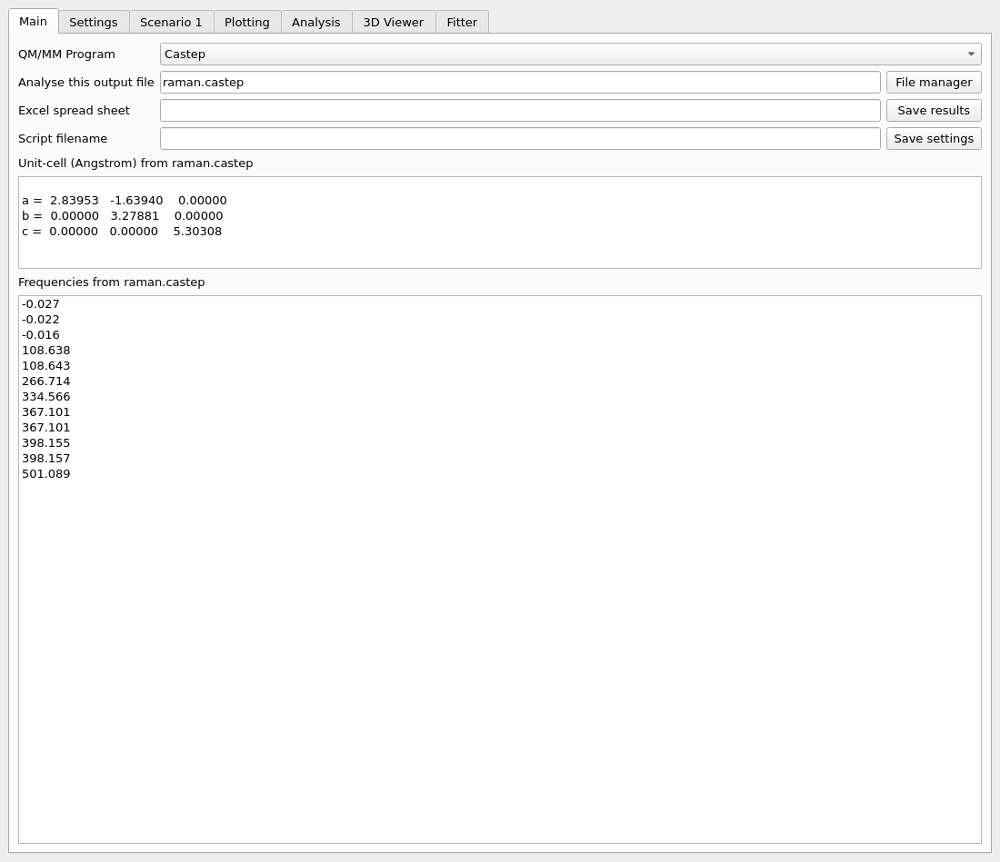
Fig. 1 The Main Tab for the ZnO calculation.¶
Choose the QM/MM Program from Abinit, Aims, Castep, Crystal, Experiment, Finite field, Gulp, Phonopy, Quantum Espresso, Vasp or PDGui. Enter the output filename in Analyse this output file, or select it with File manager. The PDGui choice reads a saved Python session. Some readers also use files beside the selected output, so keep the calculation’s companion files together.
Experiment reads material descriptions in the Experimental File Format. Finite field reads the consolidated Finite-Difference and Finite-Field JSON Format, including results from finite-difference workflows. These are material inputs; the experimental spectrum used for fitting is selected in the Fitter Tab.
Excel spread sheet sets the .xlsx destination. Save results writes the
calculated results and settings. Script filename sets the Python file written
by Save settings. Reload that file to reproduce the session; the calculation
input and any materials database referenced by it must still be available.
The lower text areas report the unit-cell vectors in Angstrom and the frequencies read from the input. They are outputs, not editable model parameters. Frequencies after mass changes and other corrections are shown in the Settings Tab.
Settings Tab¶
The Settings Tab controls the spectroscopy and the common vibrational data used by every scenario.
{kind=link}
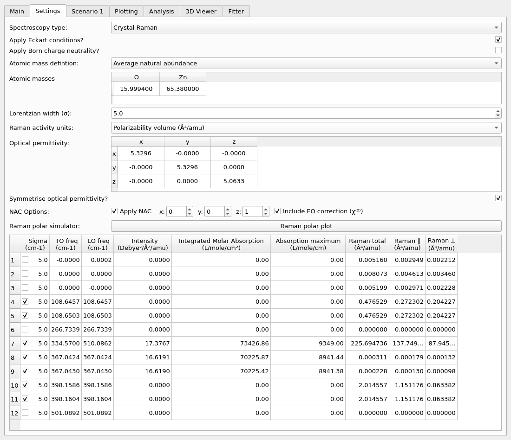
Fig. 2 The Settings Tab with NAC and EO diagnostics enabled for ZnO.¶
Spectroscopy type selects Powder Infrared, Powder ATR, Powder Raman, Crystal Infrared or Crystal Raman. Changing it replaces the scenarios with one scenario of the selected type. Save a session before changing spectroscopy if the existing scenarios will be needed again.
Apply Eckart conditions? projects out the three translational modes of the dynamical matrix and is on by default. Apply Born charge neutrality? removes the sum of the Born-charge tensors and is off by default. These controls require the corresponding data from the reader.
Atomic mass definition offers average natural-abundance masses (the default), program masses, most-common-isotope masses or individually entered masses. The Atomic masses table is editable and uses amu. With a dynamical matrix, changing masses recalculates modes and frequencies. The input-format reference explains the limitations when only precomputed modes or Raman tensors are supplied.
Lorentzian width (σ) sets the common half-width at half maximum in cm-1, initially 5. Individual mode widths can be changed in the lower table. The Optical permittivity table contains the dimensionless electronic background tensor. Edit its elements when a value must be supplied or replaced. Symmetrise optical permittivity?, on by default for electronic-structure readers, averages it over the crystal point group. Experimental input leaves this off by default. Reading a new input resets input-dependent masses and permittivity.
For Raman calculations, Raman activity units chooses polarizability-volume activities in Angstrom⁴/amu or activities in the internal \(R_\epsilon\) convention in Angstrom/amu. This changes the displayed activities, not the physical normalisation of the tensors used by scenarios.
The NAC Options row controls the mode-table diagnostics. Apply NAC fills the LO-frequency column using the direction specified by x, y and z in the crystal Cartesian frame; initially it is off and the direction is (0, 0, 1). Use a non-zero direction. Include EO correction adds the nonlinear response to the diagnostic Raman tensors when the required data are present. It is initially off. These controls are separate from Layer NAC mode and Include electro-optic term in a Crystal Raman scenario. Raman polar plot opens the Raman Polar Window.
The lower table has one row per mode. The checkbox beside Sigma determines whether the mode contributes to subsequent spectra; greyed values indicate unselected modes. The columns show TO frequency, optional LO frequency, IR intensity in Debye²/Angstrom²/amu, integrated molar absorption, absorption maximum, and total, parallel and perpendicular Raman activities where present. The headers give the units. The IR quantities and the Raman activities are different measures of response; a Raman-active mode can have zero IR intensity.
{kind=link}
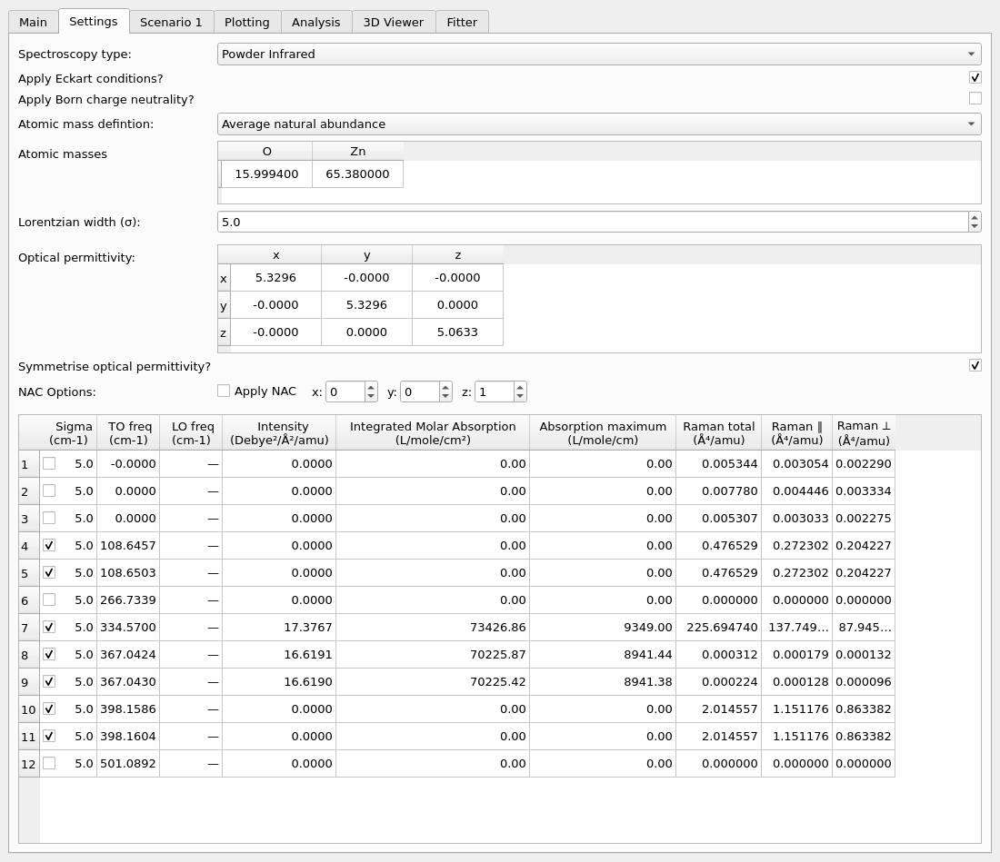
Fig. 3 The same input with Powder Infrared selected. Raman-specific controls are hidden.¶
Scenario Tabs¶
A scenario defines the sample and measurement conditions. Add another scenario copies the current scenario, allowing one variable to be changed for comparison. Delete this scenario removes it. The legend field names its curve in plots. All scenarios in a session use the spectroscopy selected in the Settings Tab; use that tab to change the spectroscopy.
Scenario types: Powder Infrared · Powder ATR · Crystal Infrared · Powder Raman · Crystal Raman.
Powder Infrared Scenarios¶
A powder scenario describes crystallites dispersed in a supporting material. The particle shape and the permittivities determine the effective optical response.
{kind=link}
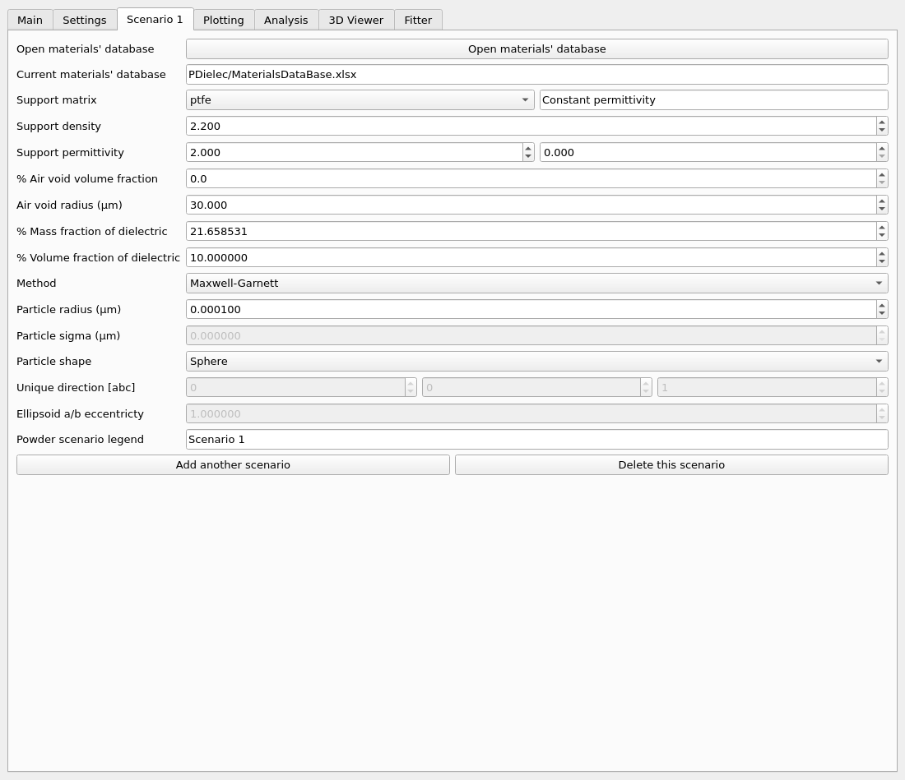
Fig. 4 The Powder Infrared scenario, using the default PTFE support.¶
Open materials’ database selects an Excel materials database; the following line reports the current file. Support matrix selects an entry. Its adjacent read-only description reports the kind of dielectric model and, for tabulated entries, the frequency range. Support density is in g/cm³. Support permittivity shows real and imaginary parts. Editing supported matrix values creates a manual description; frequency-dependent database entries should be used within their stated range.
The mass and volume fractions are displayed as percentages. Editing one recalculates the other using the material densities. They describe the amount of dielectric crystallite in the mixture. % Air void volume fraction and Air void radius describe additional air inclusions; the radius is in µm. The air-void fraction defaults to zero.
Method selects Maxwell-Garnett (default), Bruggeman, Averaged Permittivity or Mie. The first two are effective-medium treatments, Averaged Permittivity averages the response, and Mie includes finite-size spherical scattering. Particle radius and Particle sigma are in µm; the latter describes the size-distribution parameter, not the Lorentzian mode width. Their availability depends on the method. Use a small-particle effective-medium treatment only where its assumptions apply; see Theory for Infrared Absorption in Powders.
Particle shape offers Sphere, Needle, Plate and Ellipsoid. A sphere needs no orientation. A needle or ellipsoid uses Unique direction [abc] for its axis; a plate uses the corresponding (hkl) surface normal. Ellipsoid a/b is the axial aspect ratio, with one giving a sphere. Direction and ratio controls are enabled only for the relevant shape.
Scenario types: Powder Infrared · Powder ATR · Crystal Infrared · Powder Raman · Crystal Raman.
Powder ATR Scenarios¶
Powder ATR uses the particle, support-matrix and effective-medium controls described under Powder Infrared Scenarios, with additional controls for the ATR measurement geometry.
{kind=link}
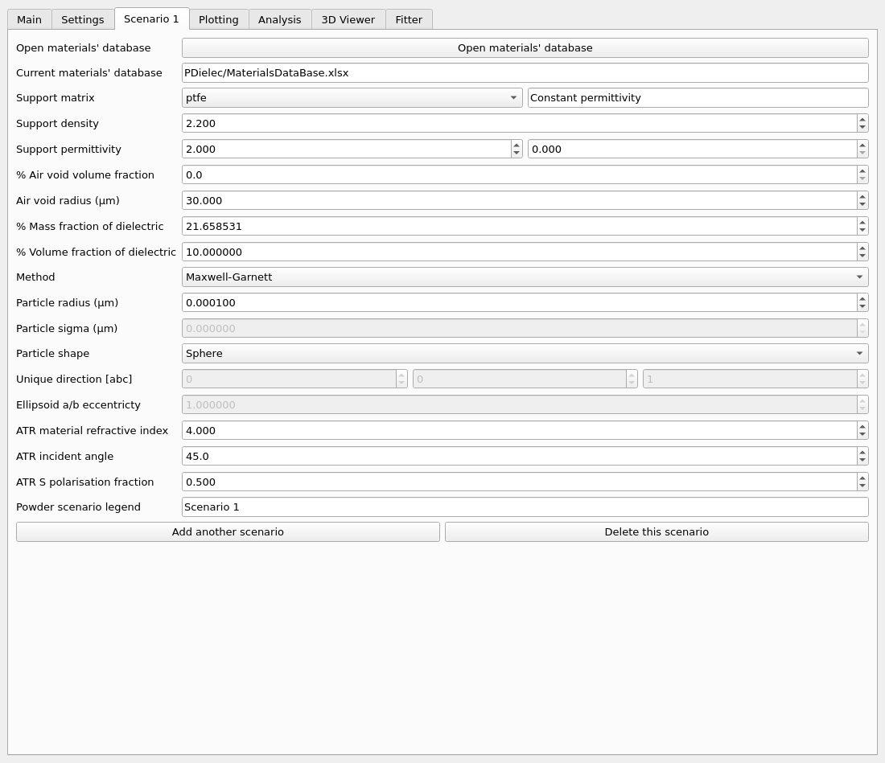
Fig. 5 The Powder ATR scenario adds the measurement geometry.¶
The Powder ATR choice adds the ATR-material refractive index, the incident angle in degrees, and the s-polarisation fraction. A fraction of zero is pure p polarisation, one is pure s, and 0.5 is an equal mixture. These controls specify the ATR optical geometry; they do not change the particle orientation. See Calculation of ATR Extinction Spectra for the calculation.
Scenario types: Powder Infrared · Powder ATR · Crystal Infrared · Powder Raman · Crystal Raman.
Crystal Infrared Scenarios¶
A crystal scenario describes a stack of planar layers between a superstrate and substrate. The Dielectric layer uses the calculation loaded in Main; other materials are selected from the database.
{kind=link}
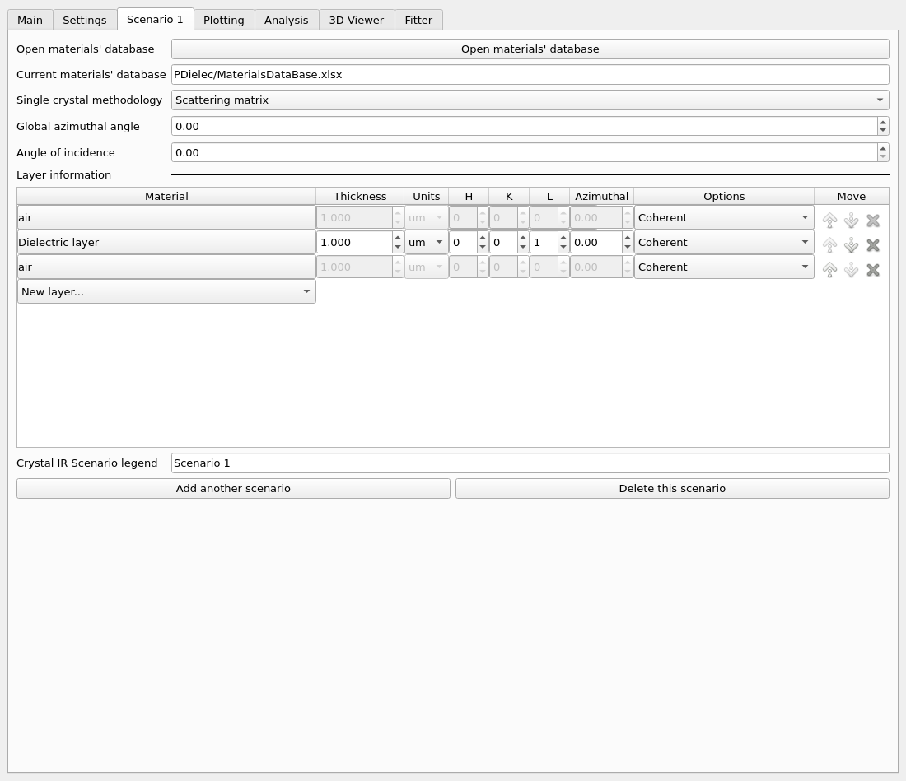
Fig. 6 The Crystal Infrared scenario for air / ZnO / air.¶
Single crystal methodology selects Transfer matrix or Scattering matrix. The default Scattering matrix is useful for avoiding numerical problems with strongly absorbing or thick layers. Global azimuthal angle rotates the stack about its surface normal; Angle of incidence measures the incoming beam from that normal. Both angles are in degrees and initially zero.
Under Layer information, each row represents a layer. Material opens the layer editor. Thickness and Units set the finite-layer thickness; the semi-infinite superstrate and substrate do not have an editable optical thickness. H, K and L specify the crystalline surface normal, and Azimuthal rotates that layer about the normal. These orientation fields do not apply to isotropic materials.
Options selects the layer’s optical coherence treatment. Coherent retains phase interference; Incoherent (intensity) combines intensities, Incoherent (phase averaging) averages optical phases, and Incoherent (non-reflective) describes a thick non-reflective medium. These optical options are distinct from Raman depth and layer coherence. The up/down arrows move a layer within the stack; the cross deletes it. New layer… adds a material selected from the database. Check the layer order after making changes.
The Layer Editor¶
Press a Material button to edit the corresponding layer.
{kind=link}
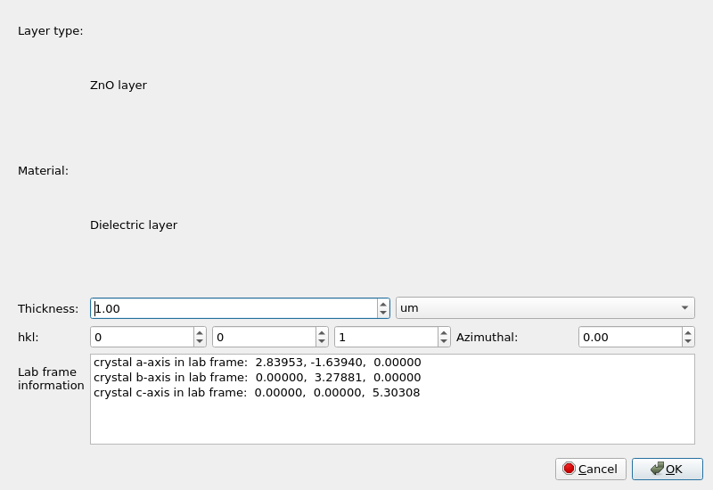
Fig. 7 The layer editor for crystalline ZnO.¶
Layer type and Material identify the layer being edited. Thickness and its unit selector describe the finite layer. For a crystal, hkl and Azimuthal set the surface and rotation. The Lab frame information output shows the lattice vectors in laboratory coordinates and their relation to the surface. It is not a second set of editable lattice parameters.
The laboratory Z-axis is normal to the surface and the incidence plane is XZ. p-polarised light lies in this plane; s-polarised light is perpendicular to it. The relationship is described in Crystal & Laboratory Coordinate Frames. OK accepts the layer changes and Cancel discards them.
{kind=link}
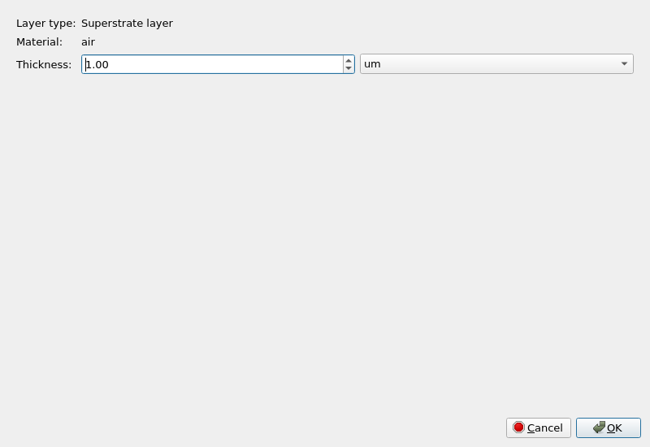
Fig. 8 An isotropic material does not require crystallographic orientation controls.¶
Scenario types: Powder Infrared · Powder ATR · Crystal Infrared · Powder Raman · Crystal Raman.
Powder Raman Scenarios¶
The Powder Raman scenario averages scattering over crystallite orientations and includes the particle’s local optical fields. It requires Raman tensors from the loaded calculation. The theory is described in Theory for Powder Raman.
{kind=link}
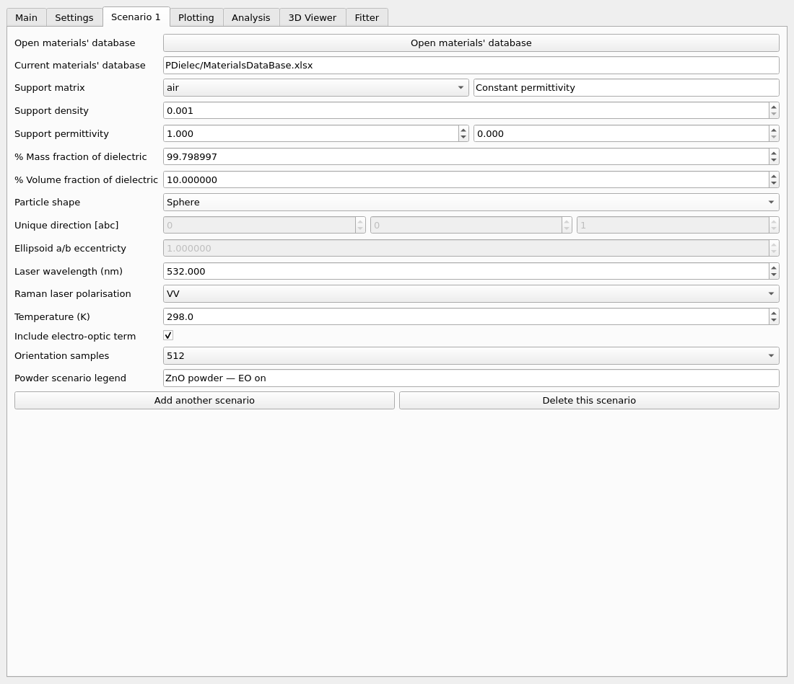
Fig. 9 ZnO spheres in air with the EO correction enabled.¶
The database, support material, density, complex permittivity, mass/volume fractions and particle-shape controls have the meanings given for powder infrared scenarios. The example uses 10% volume fraction. Laser wavelength is in nm, initially 785; the figures use 532. Raman laser polarisation selects VV (parallel, the default), VH or HV (crossed), or Unpolarised. Temperature is in K, initially 298, and determines the thermal population factor.
Include electro-optic term adds the finite-particle EO contribution to the Raman tensors using the particle’s depolarisation field. It is off by default and explicitly enabled here. The input must contain nonlinear susceptibility as well as the response needed for the particle phonon correction. Enabling the checkbox cannot supply missing data. The CASTEP ZnO example contains this response, and switching EO off gives a different spectrum.
Orientation samples selects the number of numerical orientations for non-spherical particles, from 4 to 4096, initially 512. Increase it to check convergence of an anisotropic particle average. Spheres do not need this numerical sampling. Particle shape can affect both the mode frequencies and the Raman response, so a change in shape is not simply a rescaling of peaks.
{kind=link}
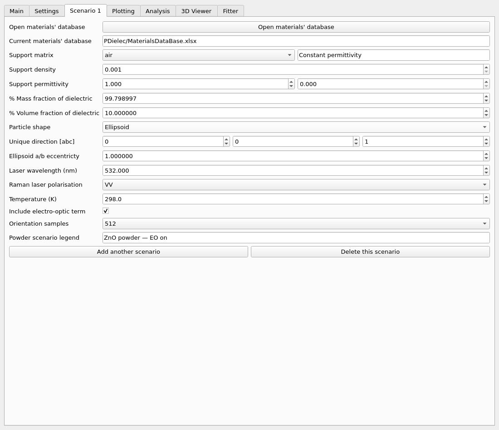
Fig. 10 Selecting Ellipsoid enables the unique-axis and aspect-ratio controls.¶
Scenario types: Powder Infrared · Powder ATR · Crystal Infrared · Powder Raman · Crystal Raman.
Crystal Raman Scenarios¶
The Crystal Raman scenario calculates laser and reciprocal scattered fields in a layered sample and combines them with the Raman tensors. The common optical method and incidence controls are followed by Raman controls, the layer table, and the azimuthal sweep controls at the bottom.
{kind=link}
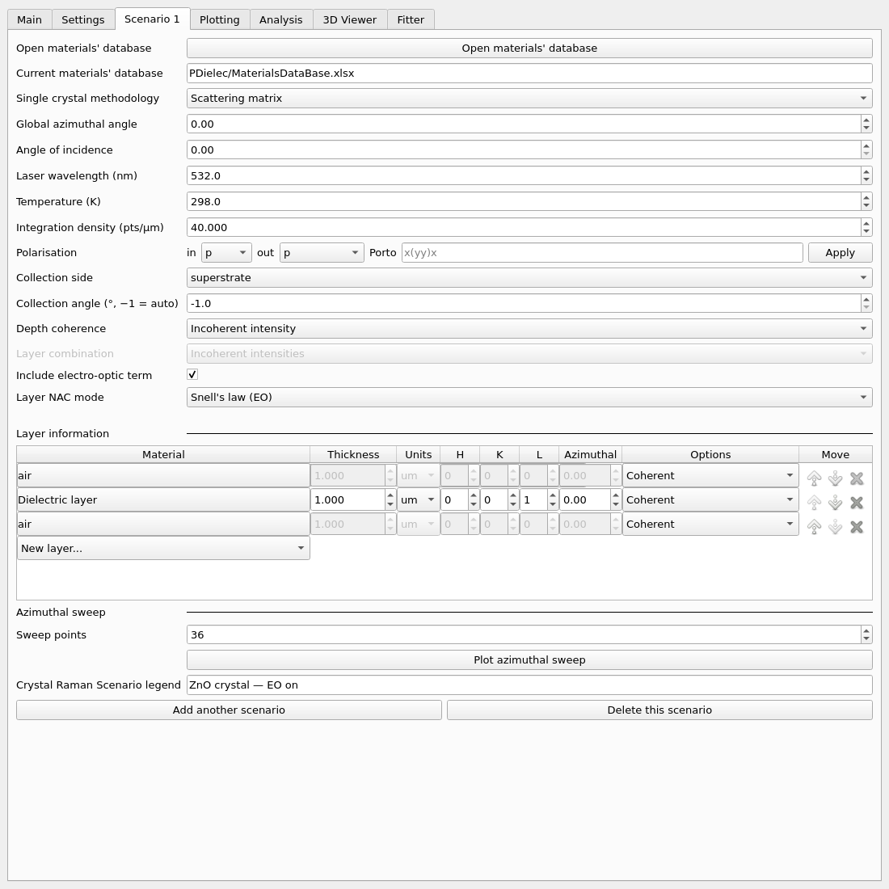
Fig. 11 A 1 µm ZnO layer with p/p backscattering and Snell’s law (EO).¶
Laser wavelength is in nm (default 532) and Temperature is in K (default 298). Integration density sets the depth quadrature density in points/µm. The default is 20 and the example uses 40; doubling it to 80 changes this spectrum negligibly. Convergence depends on the layer thickness and optical fields, so check it for a different sample.
Polarisation contains the incident (in) and detected (out) choices.
The defaults are p/p; s is perpendicular to the incidence plane and
Unpolarised detection sums the two detector channels as intensities.
Alternatively enter Porto notation and press Apply. This sets a
normal-incidence geometry, surface direction and polarisations; the selectors
then show porto. For example, x(yy)-x denotes backscattering with y-in/y-out.
The common shorthand x(yy)x is also interpreted as backscattering;
x(yy)+x explicitly requests forward scattering. Compound polarisations use
comma-separated expressions, for example z(x+y,x+y)z.
Collection side chooses superstrate (backscattering, default) or substrate (forward scattering). Collection angle is in degrees. The default −1 is automatic: retro-backscattering on the superstrate side or collinear forward scattering on the substrate side. An explicit angle equal to the incidence angle specifies specular reflection. The distinction matters at oblique incidence.
Depth coherence selects Coherent amplitude or Incoherent intensity. The former adds amplitudes through a layer before squaring; it requires an appropriate phase-coherent phonon model. The latter integrates local intensities. Layer combination separately specifies Incoherent intensities or Coherent amplitudes between active layers. Incoherent depth forces incoherent layer combination and disables that selector. The default depth choice is Coherent amplitude and the default layer combination is Incoherent intensities. The introductory example uses incoherent intensity at both levels. Thin optical layers alone do not establish coherent spontaneous Raman emission.
Include electro-optic term is on by default for crystal Raman. It uses the input nonlinear susceptibility to correct the Raman tensor of a polar mode. The Layer NAC mode chooses the phonon-frequency treatment:
Choice |
Meaning |
|---|---|
TO |
Use bulk transverse-optic frequencies without the polar correction. The EO term is not applied in this mode. |
Snell’s law |
Use the macroscopic scattering geometry to determine the phonon wavevector for the non-analytic correction. This is the default. |
Dominant mode |
Use the dominant internal optical eigenmode to determine that direction. |
All modes |
Resolve incident/scattered internal propagation-channel pairs, allowing more than one corrected frequency for an original TO mode. |
The last three choices acquire an (EO) suffix when the nonlinear response is available and the EO option is enabled. The selected example therefore shows Snell’s law (EO). These phonon corrections are separate from solving optical propagation with the transfer/scattering matrix. See Theory for Crystal Layer Raman for the assumptions and equations.
{kind=link}
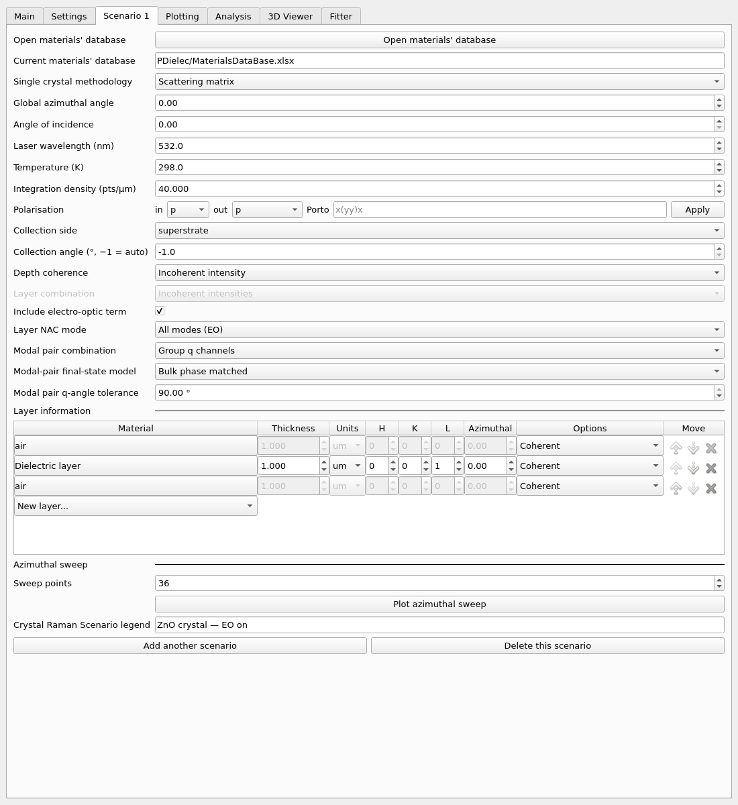
Fig. 12 The additional controls shown for All modes (EO).¶
Modal pair combination offers Group q channels (default), Incoherent pairs and Coherent all pairs. Group q channels combines amplitudes for the same phonon final state before summing intensities over different states. The other two choices are diagnostic alternatives. Modal-pair final-state model distinguishes Bulk phase matched from Local incoherent for incoherent-depth, grouped-q calculations. In the bulk model Modal pair q-angle tolerance, initially 90°, controls the accepted directions relative to the external momentum transfer. It is inactive for Local incoherent. Controls are enabled only where their combination is meaningful; a hidden All modes control does not change the Snell’s-law calculation.
The layer-table columns and editor are shared with Crystal Infrared. Raman response comes from the active dielectric layer; a database optical material does not acquire Raman tensors merely by being inserted into the stack.
Under Azimuthal sweep, Sweep points specifies equally spaced angles over 0–360°, excluding the repeated endpoint, initially 36. Plot azimuthal sweep calculates the selected geometry at those angles and opens the Azimuthal Sweep Window. Run a spectrum first to define the frequency axis. Each new sweep opens a separate result window.
Scenario types: Powder Infrared · Powder ATR · Crystal Infrared · Powder Raman · Crystal Raman.
Plotting Tab¶
The Plotting Tab displays the calculated scenarios together.
{kind=link}
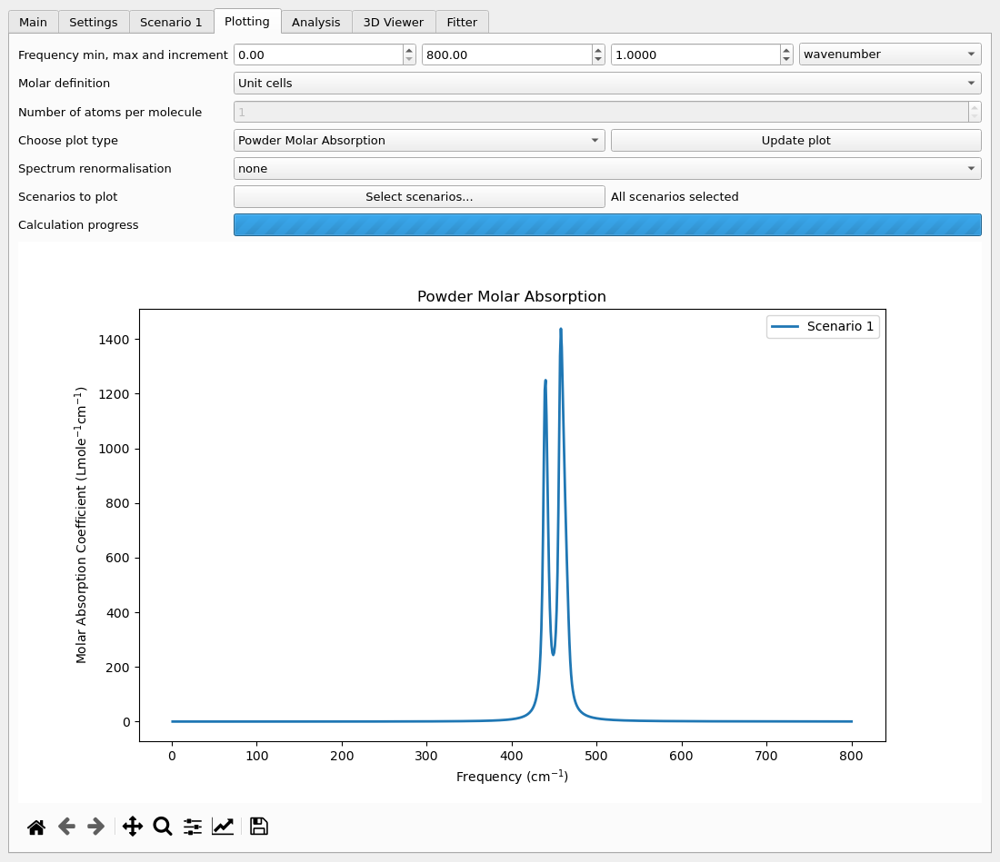
Fig. 13 The Plotting Tab for Powder Infrared.¶
Frequency min, max and increment set the calculation grid. The adjacent unit selector offers wavenumber, THz, GHz and wavelength units from Angstrom to metres. Zero is not a valid wavelength. For Raman, use wavenumber to show Raman shifts unambiguously. A sufficiently small increment is needed to resolve narrow peaks.
Molar definition chooses Unit cells, Atoms or Molecules for molar absorption; Number of atoms per molecule supplies the molecular conversion. These controls do not set the normalisation of a Raman tensor. Choose plot type offers quantities appropriate to the spectroscopy: powder absorption or permittivity, ATR response, crystal reflectance/transmittance/absorptance, or Raman intensity.
Spectrum renormalisation offers none, max=1 and area=1. Crystal Raman also offers layer depth to divide by active-layer depth. Use none when comparing absolute calculated scales between scenarios; independently normalising curves can obscure an EO or thickness effect. Raman intensities are reported in arbitrary units, not calibrated experimental cross sections.
{kind=link}
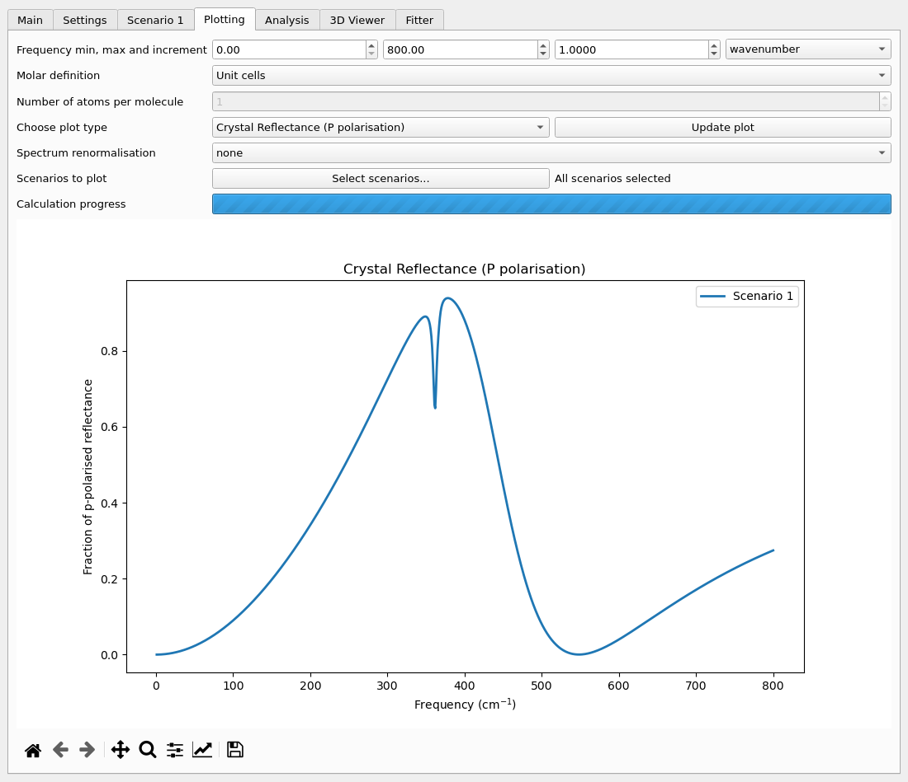
Fig. 14 The Plotting Tab for Crystal Infrared.¶
{kind=link}
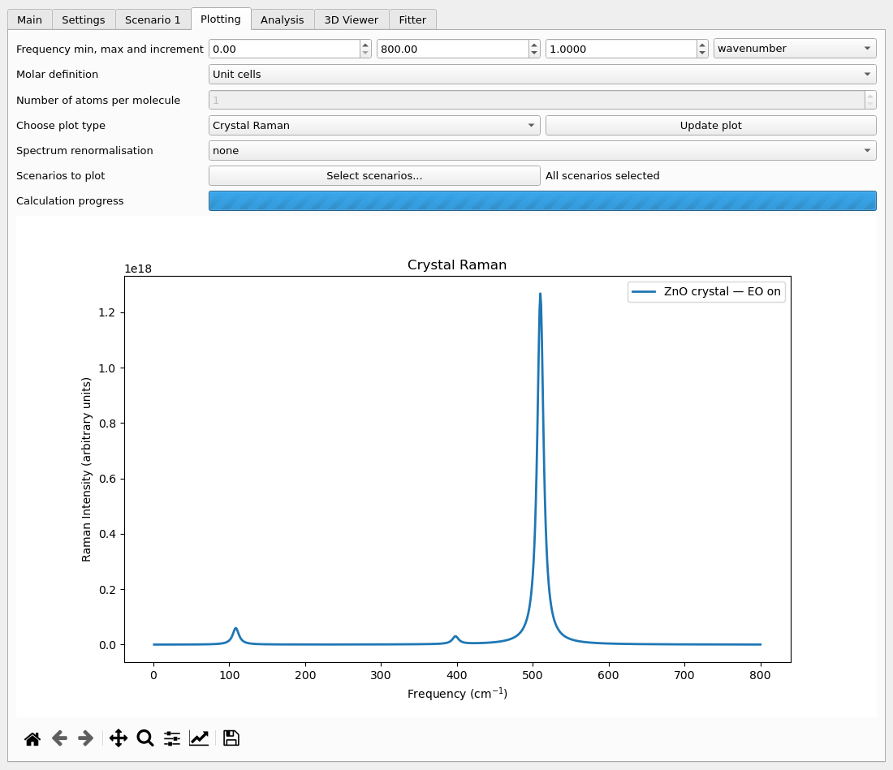
Fig. 15 The ZnO Crystal Raman spectrum with EO enabled.¶
{kind=link}
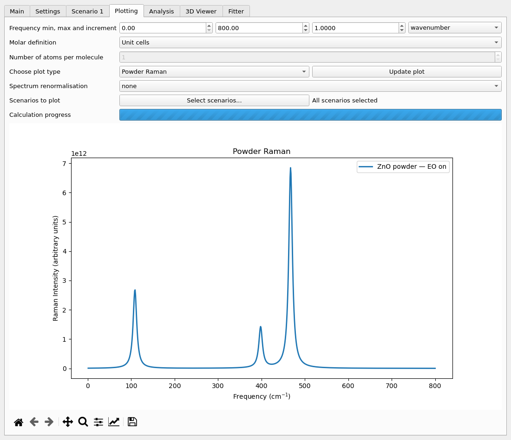
Fig. 16 The corresponding Powder Raman spectrum.¶
Select scenarios… opens a table with a Plot checkbox, scenario number and legend for each scenario. OK applies the selection; Cancel keeps it. The text beside the button reports how many are selected. Update plot refreshes the calculations and figure, with Calculation progress reporting completion. The Matplotlib toolbar provides Home, back/forward view history, pan, zoom, subplot/curve configuration and image saving; these are display operations and do not change the scenario physics.
{kind=link}
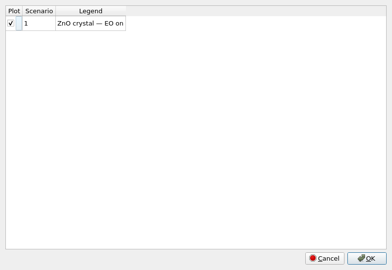
Fig. 17 Choosing which scenarios appear in the plot.¶
Analysis Tab¶
The Analysis Tab decomposes normal-mode motion into internal and external components or molecular contributions. It needs atomic positions and normal modes, rather than a permittivity-only input.
{kind=link}
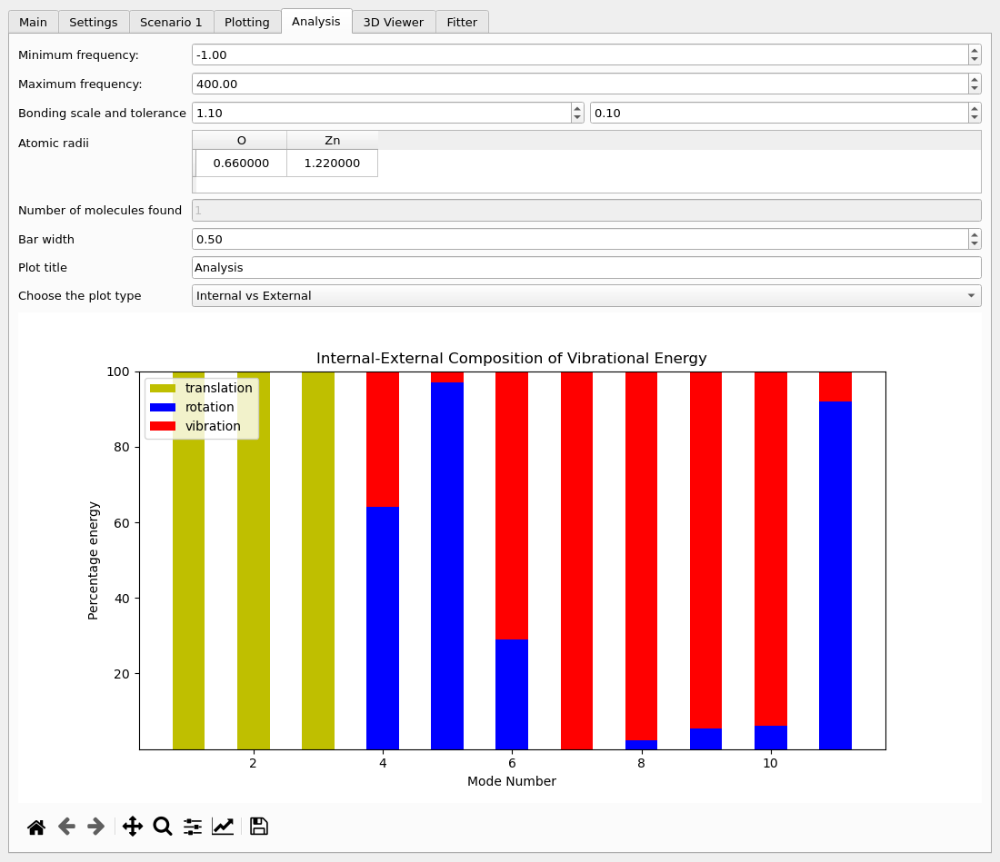
Fig. 18 The Analysis Tab for ZnO.¶
Minimum frequency and Maximum frequency select modes in cm-1. Bonding scale and tolerance identify connected atoms using a distance cutoff of scale × (radius i + radius j) + tolerance; tolerance and Atomic radii are in Angstrom. The defaults are scale 1.1 and tolerance 0.1. Edit the individual radii in the table where a different bonding description is needed. Number of molecules found is an output of that connectivity analysis. In an extended crystal a connected group should not automatically be interpreted as an isolated molecule.
Bar width (default 0.5) controls the appearance of the bars and Plot title sets the heading. Choose the plot type switches between Internal vs External and Molecular Composition. Neither option changes the phonon frequencies. The figure toolbar has the same navigation and saving actions as Plotting. See Phonon Analysis for the interpretation of the decomposition.
3D Viewer Tab¶
The 3D Viewer displays atomic structure and phonon displacements using the bonding information from Analysis.
{kind=link}
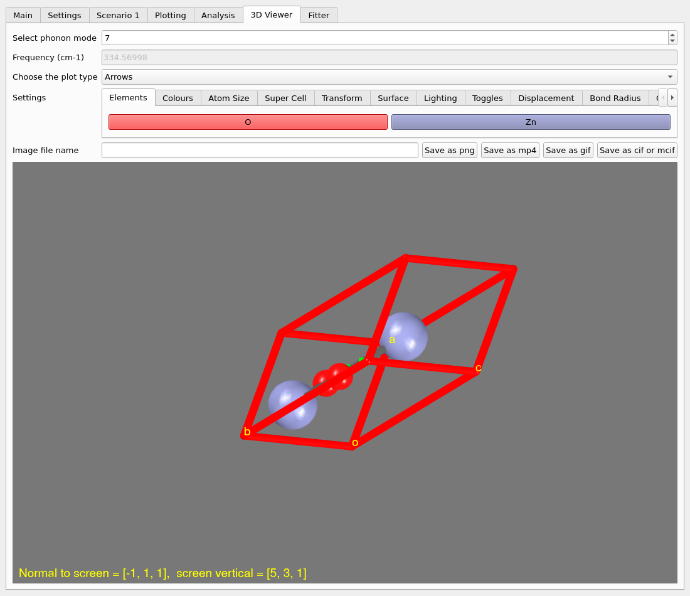
Fig. 19 The 3D Viewer showing a ZnO phonon.¶
Select phonon mode selects a numbered mode; the disabled Frequency box reports its frequency in cm-1. Choose the plot type selects Animation, Arrows or No arrows or animation. Mouse movement and the wheel rotate and magnify the view. The Settings strip contains the following tabs; use its arrows to reach those outside the available width.
Tab |
Description |
|---|---|
Elements |
Element buttons open colour selectors for the atomic spheres. |
Colours |
Separate colours for background, cell outline, bonds and displacement arrows. |
Atom Size |
Scale factor multiplying the covalent radii for displayed sphere sizes. |
Super Cell |
Integer repetitions along a, b and c of the original DFT cell. |
Transform |
Open the cell-transformation matrix editor described below. |
Surface |
hkl chooses a surface normal and uvw an in-plane direction for the view. |
Lighting |
Switch light sources 0–7 on or off. |
Toggles |
Turn cell labels, the cell outline, the orientation indicator, bonds and atoms on or off using the selector. |
Displacement |
Maximum displayed phonon displacement; controls visual scale, not a thermal displacement amplitude. |
Bond Radius |
Radius of displayed bond cylinders in Angstrom. |
Cell Radius |
Radius of the cell-outline cylinders in Angstrom. |
Arrow Radius |
Radius of displacement arrows in Angstrom. |
Image file name supplies the output path. Save as png writes a still image; Save as mp4 and Save as gif write animation; Save as cif or mcif exports the structure or mode information according to the extension. These are outputs of the viewer, not replacements for the calculation input.
The Transformation Window¶
{kind=link}
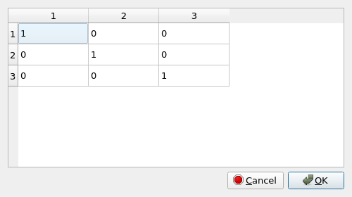
Fig. 20 The cell-transformation editor.¶
Each row of the 3 by 3 table gives a new lattice vector as a linear combination of the old lattice vectors. The identity matrix leaves the cell unchanged. Entries accept numerical expressions such as fractions. OK accepts the transformation and Cancel discards it. The viewer transformation changes the displayed cell, not the DFT calculation that supplied the modes.
Fitter Tab¶
The Fitter Tab compares a calculated scenario with an experimental spectrum and can adjust selected linewidths and an optional frequency scale.
{kind=link}
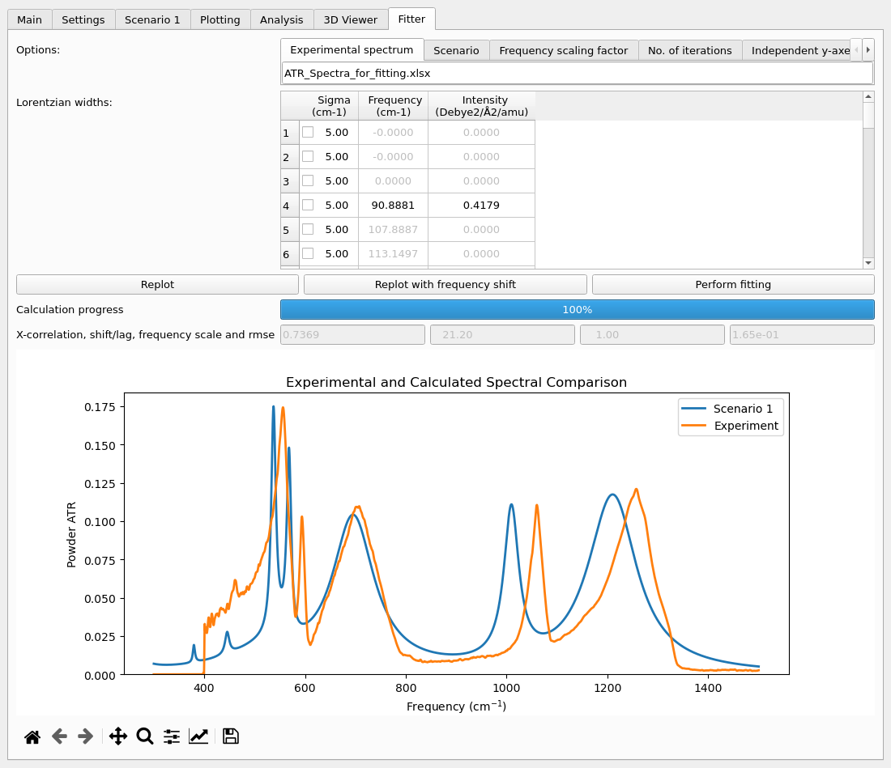
Fig. 21 The existing sodium-sulphate ATR fitting example.¶
The Options tabs provide the controls below. The experimental file is an
.xlsx spreadsheet or .csv file with frequency in cm-1 in the first
column and measured signal in the second, with at most one heading row.
This is distinct from an Experiment material file. The example uses
Examples/ATR/Na2SO42_fit/ATR_Spectra_for_fitting.xlsx and its matching
calculation; it does not use an invented ZnO experimental spectrum.
Tab |
Description |
|---|---|
Experimental spectrum |
Path of the measured data. Press Return after entering it to read it. |
Scenario |
Select the calculated scenario to compare. Its plotted quantity must match the experimental signal. |
Frequency scaling factor |
Multiplier for calculated frequencies, initially 1.0. |
No. of iterations |
Optimisation iteration limit, initially 20. |
Independent y-axes |
Use separate scales for calculated and experimental signals; initially on. Inspect the scales before comparing peak heights. |
Fitting type |
Minimise x-correlation maximises the correlation through its objective; Minimise spectral difference minimises the spectral error. |
Optimise scaling |
Include the frequency scaling factor in optimisation; initially off. |
Spectral difference threshold |
Signal threshold for the spectral-difference objective, initially 0.05. |
Baseline removal? |
Apply baseline correction to the experimental data; initially off. |
HP Filter Lambda |
Base-10 logarithm of the Hodrick-Prescott filter parameter, initially 7. |
In Lorentzian widths, edit sigma values in cm-1 and check those to include in the fit. Frequency and intensity columns identify the transitions; they are not independent fitted parameters. Replot recalculates the comparison. Replot with frequency shift additionally applies the lag that maximises the cross-correlation. Perform fitting starts optimisation and changes to an interrupt control while running. The progress bar reports calculation progress.
The four read-only diagnostics are cross-correlation, shift/lag in cm-1, frequency scale and root-mean-square error. Inspect the resulting spectrum as well as these numbers. The fitting uses the frequency range from Plotting; its toolbar controls the view and exports images.
Raman Polar Window¶
The Raman polar plot button in Settings opens a tensor-level polarisation simulator. It is useful for examining selection rules without constructing an optical layer stack.
{kind=link}
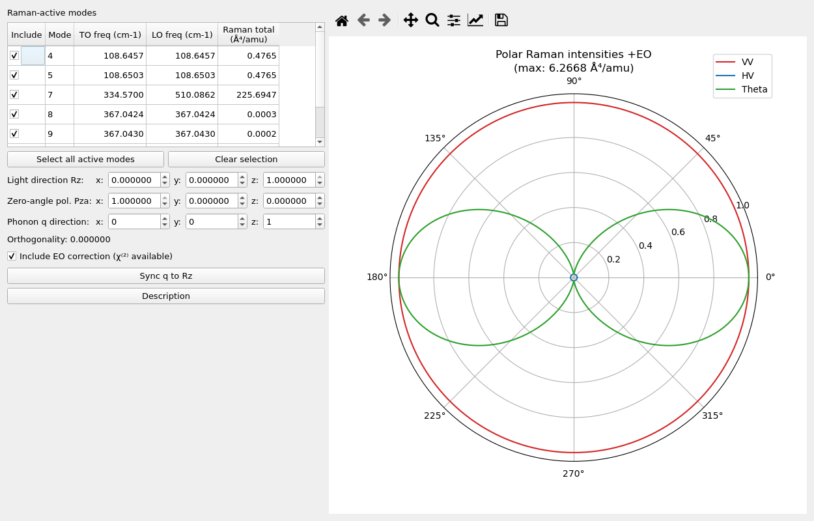
Fig. 22 The ZnO Raman polar simulator with the nonlinear response available.¶
The Raman-active modes table contains an Include checkbox, mode number, TO frequency, LO frequency when NAC data are available, and total Raman activity in the units chosen in Settings. Select all active modes and Clear selection change the plotted set.
Light direction Rz gives the propagation/rotation axis and Zero-angle pol. Pza the initial incident polarisation, both as Cartesian vectors. Pza should be perpendicular to Rz; changing Rz adjusts Pza accordingly. The read-only Orthogonality value is their dot product and should be zero. Phonon q̂ direction independently sets the crystal-frame direction for the LO and EO corrections. Sync q̂ to Rz copies the light axis, appropriate to the backscattering approximation.
Include EO correction (χ² available) is shown when nonlinear response is available and is initially checked. It is this window’s own control, not the scenario checkbox. The LO column likewise uses this window’s phonon direction. The three curves show parallel VV, crossed HV and a fixed-incident, rotating-analyser geometry. They show tensor-level angular response, without the scenario’s layer interference or depth integration. The toolbar saves and navigates the plot. Description explains the axes and geometries.
{kind=link}
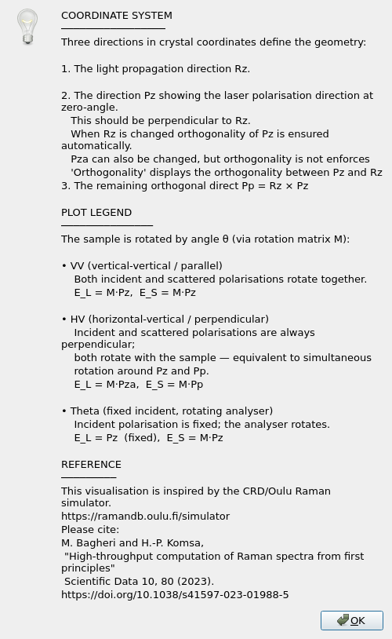
Fig. 23 The description window; close it to return to the simulator.¶
Azimuthal Sweep Window¶
The Crystal Raman Plot azimuthal sweep button opens a result window using the scenario’s layer stack, optical fields, NAC and EO settings. This is a different calculation from the tensor-level polar simulator.
{kind=link}
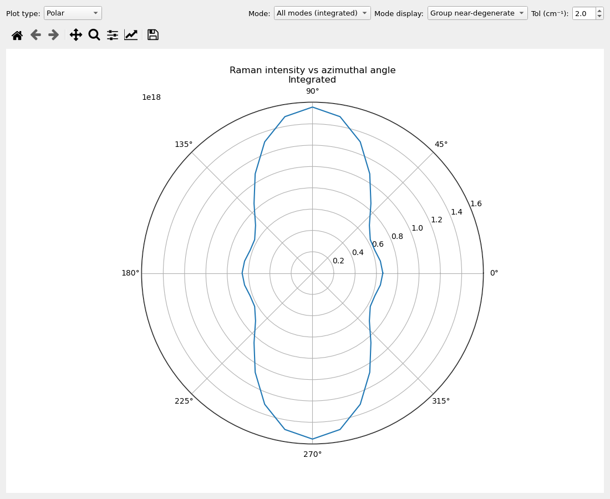
Fig. 24 A ZnO (100) azimuthal sweep with mode grouping enabled. This surface was chosen to show the variation under rotation, unlike the (001) main example.¶
Plot type offers Polar, Colour map, Waterfall and Line. Mode chooses an individual mode or All modes (integrated). Mode display selects Individual eigenmodes or Group near-degenerate. Grouping reveals Tol (cm⁻¹), initially 2.0, which sets the frequency tolerance. Grouping sums the intensities of nearly degenerate modes, avoiding an interpretation that depends on an arbitrary choice of eigenvectors within a degenerate subspace.
Polar and Line show angular intensities. Colour map and Waterfall show the spectral dependence across angles. Switching the plot presentation does not rerun the scenario; to change physical settings, return to the scenario and run a new sweep. The toolbar navigates and saves the figure.
{kind=link}
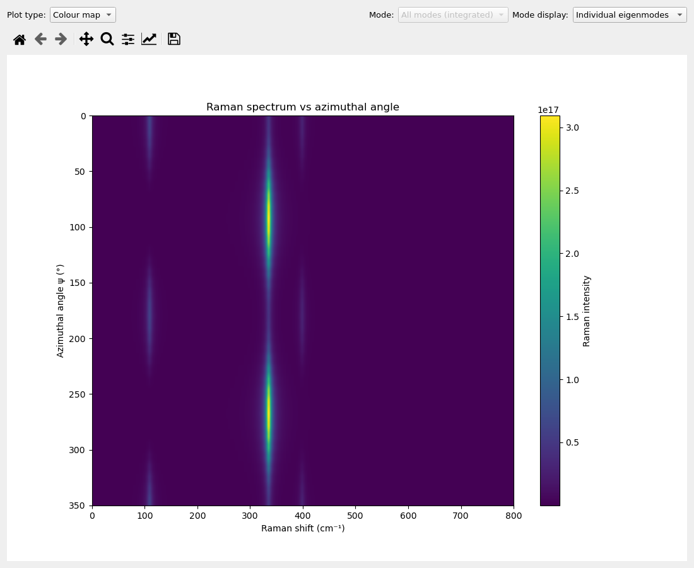
Fig. 25 The spectral colour-map view of the same sweep.¶
{kind=link}
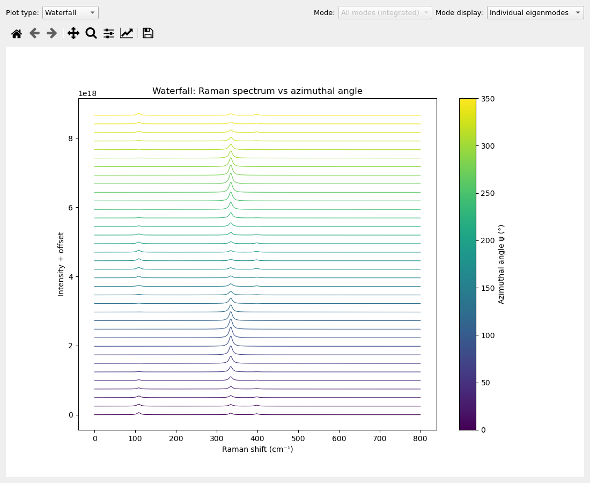
Fig. 26 The waterfall view.¶
{kind=link}
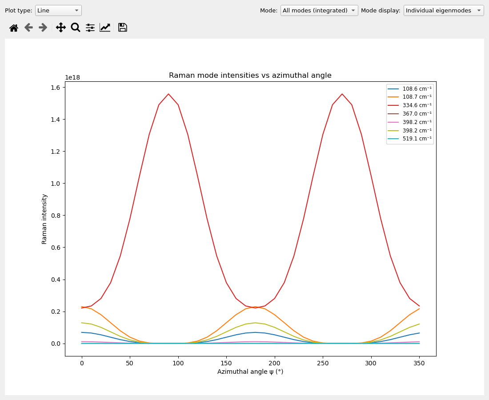
Fig. 27 The line view.¶
Saving Settings and Scripting¶
Save settings on Main writes a Python session file. The script accesses the
notebook as self.notebook and the setting dictionaries of its tabs. A
saved session records the chosen data and options; the display-only controls
of auxiliary windows should be set in those windows when required.
The PDGui Settings Reference lists every tab’s dictionary keys, accepted values and their effects, including settings available only through scripts.
Two advanced Crystal Raman settings are available through scripts while being absent from the scenario GUI:
tab = self.notebook.scenarios[0]
tab.settings['Coalesce equivalent layers'] = True
tab.settings['Approximate ES'] = False
Coalesce equivalent layers, default True, merges adjacent equivalent coherent layers before Raman field integration. Disabling it is useful for diagnosing artificial internal-boundary effects. Approximate ES, default False, uses the laser field in place of separately evaluating the scattered field when set True. It changes the optical approximation and should be recorded when reporting results.
The powder Raman wavelength in nm is stored as Raman laser wavelength.
The crystal NAC selector uses
Layer NAC mode values none, geometry, dominant_mode and
modal_pairs for TO, Snell’s law, Dominant mode and All modes respectively.
Use the saved script as the starting point rather than guessing visible-label
spellings. In an interactive script, request a refresh after changing settings.
Performance¶
PDGui can distribute calculations over worker processes. Use -cpus N to
limit the number of workers, and -threading where a thread-based worker
pool is needed. The environment variables PDIELEC_NUM_PROCESSORS,
PDIELEC_THREADING and PDIELEC_NUM_THREADS also configure parallelism.
Choose settings appropriate to the available memory and calculation size;
more workers need not make a small calculation faster.
Additional settings references¶
The settings views show each viewer and fitter settings tab separately, so controls hidden by the tab strip in an overview remain visible. The settings reference documents the dictionary keys used in Python session scripts.